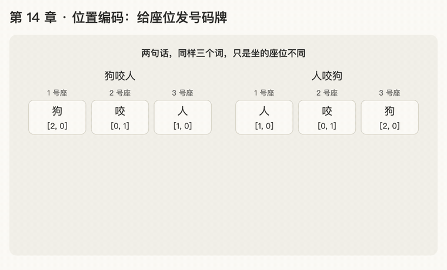

第 14 章 · 位置编码 positional encoding
本章回答：attention 怎么知道词的顺序？论文的正弦位置编码是什么？
讲解日期：2026-10-26 · 上一章：第 13 章 多头注意力 · 下一章：第 15 章 sin 和 cos
对应原文：materials/text/papers/attention-is-all-you-need-1706.03762.txt§3.5，L276–L299
本章缩写：Q / K / V = Query（查询）/ Key（键）/ Value（值）；\(d_{model}\)：d = dimension（维度），每个词向量有几个数（论文 512）；\(d_k\)：k = key，每个 key 向量有几个数（64）；pos = position（位置，座位号）；PE = Positional Encoding（位置编码）；softmax = soft（柔和的）+ max（取最大）：按大小分比例，不是只挑最大的；sin = sine（正弦）；cos = cosine（余弦）；RoPE = Rotary Position Embedding（旋转位置编码）；RoFormer = Rotary Transformer（提出 RoPE 的模型）；NoPE = No Positional Encoding（不加位置编码）；ALiBi = Attention with Linear Biases（线性偏置注意力）；CS336 = Stanford 课程 CS 336（Computer Science 336，Language Modeling from Scratch）；代码里的名字（PyTorch、nn.Linear等）见附录"PyTorch 对照"。全部缩写见 附录 · 缩写与术语表
讲解
第一步：attention 不知道顺序
回顾 attention 的四步：打分（q·k）→ 缩放 → softmax → 按比例取 v。每一步只用到每个词自己的向量，没有任何一步用到"这个词排在第几个"。
例子："狗咬人" 和 "人咬狗"，意思完全相反，但用的是同样三个词：
- "咬"的 q、"狗"的 k、"人"的 k 在两句里都一模一样（同一个词，同一个向量）；
- 所以"咬"打出来的分数、算出来的比例、取到的信息也一模一样。
类比：一袋词。 把词扔进袋子摇一摇，attention 只知道袋子里有哪些词，不知道它们排成什么顺序。
论文的说法（L278–L280）：模型里没有循环也没有卷积，想利用顺序，就必须另外注入位置信息。
第二步：用数字验证"一模一样"（2026-10-27）
用 2 维的小向量算一遍（先省略 ÷√d_k，不影响结论）。"咬"的 q = [1, 0]，三个词的 k 和 v：
| 词 | k | v |
|---|---|---|
| 狗 | [2, 0] | [10, 0] |
| 咬 | [0, 1] | [2, 2] |
| 人 | [1, 0] | [0, 10] |
句子 A："狗咬人"（排列顺序：狗、咬、人）
| 狗 | 咬 | 人 | |
|---|---|---|---|
| ① 打分 q·k | 1×2+0×0 = 2 | 1×0+0×1 = 0 | 1×1+0×0 = 1 |
| ③ \(e^{x}\) | 7.39 | 1 | 2.72 |
| softmax 比例（÷ 总和 11.11） | 0.665 | 0.090 | 0.245 |
④ 取信息：0.665×[10,0] + 0.090×[2,2] + 0.245×[0,10] = [6.65,0] + [0.18,0.18] + [0,2.45] = [6.83, 2.63]
句子 B："人咬狗"（排列顺序：人、咬、狗）
| 人 | 咬 | 狗 | |
|---|---|---|---|
| ① 打分 | 1 | 0 | 2 |
| softmax 比例 | 0.245 | 0.090 | 0.665 |
④ 取信息：0.245×[0,10] + 0.090×[2,2] + 0.665×[10,0] = [6.83, 2.63]，和 A 一模一样。
为什么一样：
- 每个词的分数只看"咬的 q"和"这个词的 k"，k 是词自己的，和它排第几无关 → "狗"在两句里都拿 0.665，"人"都拿 0.245；
- 最后一步是加法，加法换顺序结果不变（3 + 5 = 5 + 3）→ 只是把同样三项换个顺序相加。
结论： 意思应该不一样，attention 算出来的却一样。模型分不出"谁咬谁"，这就是必须加位置信息的原因。
第三步：最朴素的修法：给每个位置发一个"号码牌"向量（2026-10-27）
类比：号码牌。 比赛时每个座位上放一块号码牌：坐 1 号座的人戴"1 号牌"，坐 3 号座的人戴"3 号牌"。同一个人换个座位，戴的牌就不一样。
公式：
| 符号 | 意思 |
|---|---|
| \(x_i\) | 第 \(i\) 个位置上那个词的词向量（只看是哪个词） |
| \(p_i\) | 第 \(i\) 个位置的位置向量（只看排第几，和是哪个词无关） |
| \(x_i'\) | 加完以后的向量，之后拿它去变出 q、k、v |
关键：\(p_i\) 跟着位置走，不跟着词走。
例子（为了好算，假设变出 q、k 时"原样不变"，即 q、k 就等于加完位置后的向量）。位置向量：\(p_1=[0,1]\)，\(p_2=[0,2]\)，\(p_3=[0,3]\)。"咬"在两句里都排第 2，所以它的 q 都是 [1,0] + [0,2] = [1, 2]。
| 狗咬人 | 人咬狗 | |
|---|---|---|
| 狗的 k | 排第 1：[2,0]+[0,1] = [2,1] → 分数 1×2+2×1 = 4 | 排第 3：[2,0]+[0,3] = [2,3] → 分数 2+6 = 8 |
| 人的 k | 排第 3：[1,0]+[0,3] = [1,3] → 分数 1+6 = 7 | 排第 1：[1,0]+[0,1] = [1,1] → 分数 1+2 = 3 |
同一个"狗"，分数从 4 变成了 8，后面的 softmax 比例和取到的信息也就跟着不同。模型终于分得出谁在前、谁在后了。
题 2 的答案就在这里：要让结果不同，就得让 k（以及 q）在两句里变得不一样；办法是把"排第几"加进向量里。
第三步重讲：只看"狗"一个词（2026-10-30，应要求重讲）
第三步一次讲了公式、q、k 和分数表，太多了。重讲只保留一件事：加上号码牌以后，同一个词在不同座位上的向量变得不一样了。
问题回顾：attention 只认词，不认座位。"狗"排第 1 还是第 3，它的向量都是 [2, 0]。
办法：每个座位放一块号码牌（一个向量），谁坐上去，就把牌加到自己的向量上（向量加法：对位相加，见附录）。
| 座位 | 1 号 | 2 号 | 3 号 |
|---|---|---|---|
| 号码牌 | [0, 1] | [0, 2] | [0, 3] |
只看"狗"：
| 狗咬人 | 人咬狗 | |
|---|---|---|
| 狗坐第几号 | 1 | 3 |
| 狗本身的向量 | [2, 0] | [2, 0] |
| 加上的号码牌 | [0, 1] | [0, 3] |
| 加完的向量 | [2, 1] | [2, 3] |
以前两句里的"狗"一模一样，现在不一样了。向量不同 → 打分不同 → 比例不同 → 取到的信息不同（具体数字见上面第三步的表）。
一句话：号码牌属于座位，不属于词；谁坐上来，谁就戴上这块牌。
把"人"也算一遍（"人"本身是 [1, 0]）：
| 狗咬人 | 人咬狗 | |
|---|---|---|
| 人坐第几号 | 3 | 1 |
| 加上的号码牌 | [0, 3] | [0, 1] |
| 加完的向量 | [1, 3] | [1, 1] |
第四步：号码牌一直往上加，会出什么问题？（2026-11-05）
到目前为止的号码牌是 [0, 1]、[0, 2]、[0, 3]……，座位号越大，牌上的数就越大。
一句话很长时会怎样？第 1000 号座的牌是 [0, 1000]。"狗"本身是 [2, 0]，坐到 1000 号座：
[2, 0] + [0, 1000] = [2, 1000]
词本身的数只有 2，牌上的数有 1000。加完的向量几乎只剩"座位"，看不太出是哪个词了。
类比：名字和门牌号。 一张小纸条上写着名字，旁边贴着一块巨大的门牌号。远远一看，只看得见门牌号，看不清名字。
结论： 号码牌的数不能无限变大。好的位置向量应该一直保持在一个固定的小范围里，不管排第几都不会把词盖住。论文用正弦、余弦来做号码牌，原因之一就在这里：sin、cos 的值永远在 −1 到 1 之间（第 15 章讲）。
动画演示：号码牌怎么让 attention 分出顺序

可交互版：animations/14-positional-encoding.html（用浏览器打开，可播放、单步，还能拖滑块让"狗"坐到任意座位）。
怎么看：
- 前三帧：不戴号码牌，两句话里每个词的分数一样（狗 2、咬 0、人 1），结果都是 [6.83, 2.63]；
- 中间四帧：座位上放号码牌，谁坐上来谁加上它。同一个"狗"分数从 4 变成 8，同一个"人"从 7 变成 3；
- 最后七帧："狗"从 1 号座一路坐到 1000 号座，绿色（词本身）越来越窄，最后几乎看不见。
练习与作答记录
题 1："狗咬人"和"人咬狗"里，"咬"这个词经过 attention 算出的新向量一样吗？为什么？
作答（2026-10-27）："不一样的。"✗
点评：直觉对（意思确实应该不同），但问的是 attention 算出来的结果，那是一样的。原因见第二步：分数只看 q、k，和位置无关；最后是加法，换顺序不变。已加入卡片 R26。
题 2：要让"咬"在两句里算出不同的结果，至少要让什么在两句里变得不一样？
作答（2026-10-27）："是的。继续"（未作答，直接进入下一步）。答案见第三步：让 k / q 带上"排第几"的信息。
题 3："人咬狗"里的"人"排第 1，它加的是 \(p_1\) 还是 \(p_3\)？"狗咬人"里的"人"呢？
作答（2026-10-30）：要求"再重新讲下"，未作答，改为重讲（见"第三步重讲"）。
题 3（重讲后的数字版）："人咬狗"里，"人"坐 1 号座。它加上的号码牌是 [0, 1] 还是 [0, 3]？
作答（2026-11-05）："0，1"，即 [0, 1]。✓
点评：对。牌跟着座位走："人"坐 1 号座就戴 1 号牌 [0, 1]，加完是 [1, 0] + [0, 1] = [1, 1]。在"狗咬人"里"人"坐 3 号座，戴的就是 [0, 3]。已加入公式卡片 R27。
题 4："狗"本身是 [2, 0]，坐到 1000 号座（号码牌 [0, 1000]），加完是多少？这个向量里，"是哪个词"和"坐第几号"哪个占的份量大？
作答（2026-11-05）："2，1000"，即 [2, 1000]。✓（后半问没答）
点评：加法对。后半问的答案："坐第几号"占的分量大得多。词本身的数只有 2，牌上的数有 1000，向量几乎只剩座位，看不出是"狗"了。所以号码牌不能无限变大，这是第 15、16 章换成 sin、cos 的原因。已加入卡片 R28。
口诀
号码牌跟座位走，谁坐上来谁戴上；
牌不能无限变大，不然盖住词本身。
本章复习卡片
- R26（attention 本身分不出词序）
- R27（号码牌公式 \(x_i' = x_i + p_i\)）
- R28（朴素号码牌的毛病：数越来越大，盖住词）
附录 · 延伸阅读
留给以后深入学习用，不影响本章主线。★ 是建议先读的。
- 本地论文的文本版在materials/text/papers/，表里的行号就是指这个文本版。
- CS336 handout 在cs336-spring2025/materials/text/cs336_spring2025_assignment1_basics.txt。
推荐阅读
| 读什么 | 读哪里 | 读它为了什么 |
|---|---|---|
| ★ Attention Is All You Need | §3.5，L276–L299；Table 3 (E)（L475、L489） | 正弦位置编码原文；"学出来的位置向量"效果几乎一样 |
| ★ Su et al. 2021, RoFormer / RoPE | §3.2 Rotary position embedding（先读 §3.2.1 二维情况） | 现代模型几乎都用的位置编码：不是"加号码牌"，而是"按位置旋转 q、k"（阶段 B） |
| Formal Algorithms for Transformers | Algorithm 2 Positional embedding | 位置向量的伪代码 |
| Shaw et al. 2018, Self-Attention with Relative Position Representations（arXiv 1803.02155） | 全文 | 不给"第几号"，而给"相隔几个"：相对位置的起点 |
| Press et al. 2021, ALiBi | §3 | 不改向量，直接在分数上减去"距离 × 斜率" |
| Kazemnejad et al. 2023, NoPE | 前两节 | 只用 decoder 时，不加位置编码也能学到顺序（因为有因果 mask，第 17 章） |
| CS336 a1 handout | §3.5.3 Relative Positional Embeddings、Problem (rope) | 作业里实现 RoPE |
| EleutherAI, Rotary Embeddings: A Relative Revolution（https://blog.eleuther.ai/rotary-embeddings/） | 全文 | 写给工程师看的 RoPE 讲解 |
数学原理
- 置换等变 permutation equivariance：把输入的词换个顺序，attention 的输出也只是跟着换个顺序，每个词得到的新向量不变。这就是第一、二步"狗咬人 = 人咬狗"的严格说法。
- 加法注入：\(\mathbf x + \mathbf p\) 之后再做点积，按第 2 章"点积可以拆开"，分数会多出"词和位置"、"位置和位置"几项。位置信息就是从这几项进入分数的。
- 正弦与余弦：论文公式的前置知识，第 15 章讲。
公式清单
| 公式 | 意思 |
|---|---|
| \(\mathbf x_i' = \mathbf x_i + \mathbf p_i\) | 号码牌：位置向量加到词向量上 |
| \(\text{Attn}(PX) = P \cdot \text{Attn}(X)\) | 置换等变；P 是"重新排序"的矩阵 |
| \((\mathbf x_i + \mathbf p_i)\cdot(\mathbf x_j + \mathbf p_j) = \mathbf x_i\cdot\mathbf x_j + \mathbf x_i\cdot\mathbf p_j + \mathbf p_i\cdot\mathbf x_j + \mathbf p_i\cdot\mathbf p_j\) | 拆开后多出三项位置相关的分数（省略了 \(W^Q, W^K\)） |
| \(PE_{(pos,2i)} = \sin(pos / 10000^{2i/d_{model}})\) | 论文的正弦编码（偶数位），第 16 章讲 |
| \(PE_{(pos,2i+1)} = \cos(pos / 10000^{2i/d_{model}})\) | 奇数位用余弦 |
PyTorch 对照：把本章的数字用代码算一遍
代码在仓库本地
transformer-deep-dive/solutions/chapter-code/ch14_positional_encoding.py，配套测试tests/test_ch14_17.py（在线版不带代码文件，下面摘了关键几行）。Mac 上直接能跑，不需要 GPU：
bash cd transformer-deep-dive/solutions/chapter-code uv run python ch14_positional_encoding.py
讲义 ↔ 代码：
| 讲义 | 公式 / 说法 | PyTorch 写法 | 跑出来 |
|---|---|---|---|
| 不加位置 | 狗咬人 vs 人咬狗 | bite_output(...) |
两句"咬"都是 [6.83, 2.63] |
| 整句换顺序 | attention 不认顺序 | attn(x[perm]) vs attn(x)[perm] |
相等：输出只是跟着换顺序 |
| 加号码牌 | \(x_i' = x_i + p_i\) | k + seat_tags |
狗的分数 4 → 8 |
| 牌一直往上加 | [2, 0] + [0, 1000] | 向量加法 | [2, 1000]：几乎只剩座位号 |
关键几行：
k = torch.tensor([K[w] for w in sentence]) # 只看是哪个词
k = k + seat_tags # x_i' = x_i + p_i：每行加上自己座位的牌
attn(x[perm]) == attn(x)[perm] # 打乱输入 = 打乱输出
代码里才看得到的：
- 打乱输入，输出只是跟着打乱：
attn(x[perm])和attn(x)[perm]完全相等。这叫 permutation equivariance（置换 / 等变：换顺序前后的结果只差一个换顺序），说的就是"attention 只知道袋子里有哪些词"。 x[perm]一行换顺序：perm = [2, 1, 0]表示新的第 0 行取原来的第 2 行，"狗咬人"就变成"人咬狗"。
自己改一改：
- 把号码牌换成 [0, 0.1]、[0, 0.2]、[0, 0.3]，"狗"在两句里的分数还不一样吗？差得多还是少？